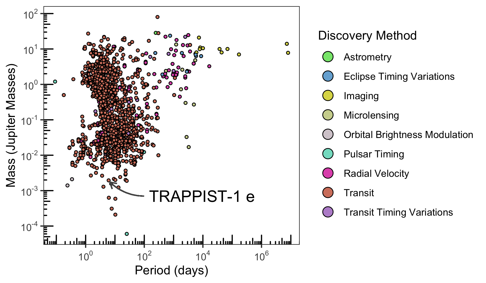

In this vignette, we will cover all functionality in exoplanets by recreating the discovery plot shown in the packages README file. First, we’ll need to load the package.
We will need a couple of columns to recreate the plot:
To identify the column names that represent these things, we have two options:
tableinfo
I’d encourage you to read the documentation if you’re interested in all the details, it is especially useful to familiarize yourself with what you need. In this example, we are interested in the Planetary Systems (PS) table. Per the documentation you will find:
PS provides a single table view of the all of the ingested planetary systems for each known exoplanet with each row containing a self-contained set of parameters (planet + stellar + system) for each reference. The PS Table contains one row per planet per reference.
The columns we actually need are:
pl_namepl_orbperpl_massjdiscoverymethodWe can find these columns and their description in the tableinfo dataset.
tableinfo %>%
filter(table == "ps") %>%
select(database_column_name, description) %>%
filter(database_column_name %in% c(
"pl_name",
"pl_orbper",
"pl_massj",
"discoverymethod"
))
#> # A tibble: 4 x 2
#> database_column_name description
#> <chr> <chr>
#> 1 pl_name Planet name most commonly used in the literature
#> 2 discoverymethod Method by which the planet was first identified
#> 3 pl_orbper Time the planet takes to make a complete orbit around the host star or system
#> 4 pl_massj Amount of matter contained in the planet, measured in units of masses of JupiterIn general, if you have a specific set of columns you need, requesting those columns will be quicker than requesting all columns (default behavior). Let’s request only what we need.
discovery <- exoplanets(
table = "ps",
columns = c(
"pl_name",
"pl_orbper",
"pl_massj",
"discoverymethod"
)
)
#> • https://exoplanetarchive.ipac.caltech.edu/TAP/sync?query=select+pl_name,pl_orbper,pl_massj,discoverymethod+from+ps&format=csv
#>
#> ── Column specification ───────────────────────────────────────────────────────────────────────────────────
#> cols(
#> pl_name = col_character(),
#> pl_orbper = col_double(),
#> pl_massj = col_double(),
#> discoverymethod = col_character()
#> )
discovery
#> # A tibble: 29,398 x 4
#> pl_name pl_orbper pl_massj discoverymethod
#> <chr> <dbl> <dbl> <chr>
#> 1 Kepler-11 c 13.0 0.042 Transit
#> 2 Kepler-11 f 46.7 0.007 Transit
#> 3 HAT-P-1 b 4.47 0.532 Transit
#> 4 OGLE-TR-10 b 3.10 0.62 Transit
#> 5 TrES-2 b 2.47 1.20 Transit
#> 6 WASP-3 b 1.85 1.76 Transit
#> 7 47 UMa b 1078 NA Radial Velocity
#> 8 47 UMa d 14002 NA Radial Velocity
#> 9 HD 167042 b 421. NA Radial Velocity
#> 10 HD 210702 b 354. NA Radial Velocity
#> # … with 29,388 more rowsFinally, we can recreate the plot.
cols_vec <- c("#86E57B", "#77AFD7", "#DCD955", "#CFD49C", "#D5CCD1", "#84DECA", "#E15AB9", "#D4816C", "#BA91D1", "#A152DF")
discovery %>%
filter(
!is.na(pl_massj),
!is.na(pl_orbper),
!is.na(discoverymethod)
) %>%
ggplot(aes(pl_orbper, pl_massj)) +
geom_point(aes(fill = discoverymethod), color = "black", shape = 21, size = 1) +
scale_x_log10(
breaks = scales::trans_breaks("log10", function(x) 10^x),
labels = scales::trans_format("log10", scales::math_format(10^.x))
) +
scale_y_log10(
breaks = scales::trans_breaks("log10", function(x) 10^x),
labels = scales::trans_format("log10", scales::math_format(10^.x))
) +
labs(
x = "Period (days)",
y = "Mass (Jupiter Masses)",
fill = "Discovery Method"
) +
annotation_logticks() +
scale_fill_manual(values = cols_vec) +
guides(fill = guide_legend(override.aes = list(size = 4))) +
geom_curve(
aes(x = 100, y = 0.00070, xend = 6.0996151 + 0.6, yend = 0.00194 - 0.0002),
colour = "#555555",
size = 0.5,
curvature = -0.2,
arrow = arrow(length = unit(0.03, "npc"))
) +
geom_label(
aes(x = 100, y = 0.00070, label = "TRAPPIST-1 e"),
hjust = 0,
vjust = 0.5,
label.size = NA,
size = 5
) +
theme_bw() +
theme(panel.grid = element_blank())
And in case you were wondering, we’ve highlighted TRAPPIST-1e, an exoplanet considered to be one of the most potentially habitable exoplanets discovered so far.